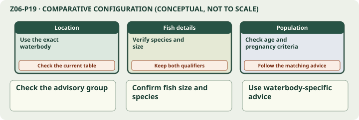

Z06-P19 · Hunting and fishing · New manuscript
Fish Consumption Limits for Pregnant People and Children Under 15
Enforce MDH stricter fish-consumption tiers for pregnant people, people who may become pregnant, nursing parents, and children under 15.
When it applies · Household meal planning with wild-caught freshwater fish.
Equipment · MDH sensitive-population advisory chart.

Actions
- Use the sensitivity category described in the current MDH advisory. Check pregnancy, possible pregnancy, nursing and child age against that specific instruction.[H04]
- Use the current species, measured size and waterbody guidance to select fish. A broad label such as predatory fish does not replace the chart.[H04]
- Check both wild-caught local advisories and commercial fish limits together so combined weekly mercury intake does not accumulate.[H04]
Failure recognition · Serving general-adult predator fish portions to toddlers or pregnant people exceeds developmental neurotoxicity thresholds.[H04]
Verify · Household meal plans verify sensitive-group MDH limits separately from general-adult allowances.[H04]
Stop or change course · Stop serving wild-caught fish to pregnant people or children whenever waterbody advisory status is unknown.[H04]
Evidence and editorial notes
- H04 · Minnesota Dept. of Health · Fish Consumption Guidance and Waterbody Advisories (Current web edition)
- Section: Waterbody-specific fish consumption advisories (mercury, PFAS, PCBs) · Conditions: Consuming Minnesota caught freshwater fish
Support: MDH issues species-, size-, and waterbody-specific meal-frequency limits for mercury, PCBs, and PFAS, with stricter limits for pregnant/nursing people and children under 15.
Limitations: Visual fish health and water clarity cannot detect mercury, PFAS, or PCBs; check current MDH waterbody lookup before eating caught fish. · Conflicting evidence: None noted.
Editorial note: Mandatory Z06 public-health fish advisory gate. · Specialist reviewer: Public-health toxicologist and MDH reviewer
Primary source · checked 2026-11-25
Source lineage · New manuscript (Z06 P17 vulnerable groups) · Classification · New manuscript.